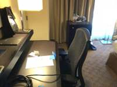
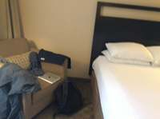
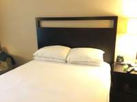
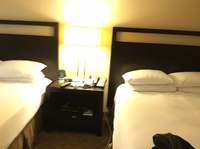
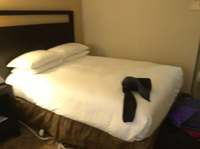
To determine the relative position of the desk when standing at the television and gazing at the toilet, let's analyze the layout of the room based on the provided frames:
- Locate the Television: In frames 21 and 22, the television is positioned on a dark-colored dresser.
- Locate the Desk: In the same frames (21 and 22), the desk is located immediately to the right of the television dresser.
- Locate the Toilet/Bathroom: Frames 26, 27, and 28 show the bathroom entrance, which is located down a short hallway to the left of the main room area.
- Determine Orientation:
- Standing at the television means you are positioned by the TV dresser.
- Gazing at the toilet means you are looking toward the bathroom door, which is away from the wall where the TV and desk are located and toward the hallway.
- Since the desk is situated to the right of the television dresser, if you are standing at the TV and facing the direction of the bathroom, the desk will be to your right.
Comparing this to the given options: A. front-right B. back-left C. front-left D. right
The desk is located directly to the right of the television's position.
D
ReturnAnswer("C")
[ReturnAnswer] Answer submitted: C
Task Analysis
The objective is to determine the relative position of a desk from the perspective of a person standing at a television and looking towards a toilet.
Coordinate System Resolution: This is an object-perspective spatial reasoning task. The reference frame is defined as follows:
- Origin: The 3D position of the television.
- Forward Direction (Gaze): The unit vector pointing from the television to the toilet.
- Right Direction: The vector perpendicular to the forward direction and the world-up axis (+Y), following the right-hand rule.
- Target: The position of the desk relative to this local coordinate system.
The result will be categorized as:
- Front/Back: Based on the sign of the projection of the (TV $\rightarrow$ Desk) vector onto the (TV $\rightarrow$ Toilet) vector.
- Left/Right: Based on the sign of the projection of the (TV $\rightarrow$ Desk) vector onto the calculated Right vector.
Information Needs
- Object Identification: Identify which frames contain the television, toilet, and desk.
- Precise Segmentation: Generate high-quality masks for these three objects to calculate their centroids.
- 3D Geometry: A 3D reconstruction of the scene to obtain world-space coordinates for the objects.
- Relative Vectors: The 3D centroids of the TV, Toilet, and Desk.
Computation Plan
-
Object Discovery:
- Use
vlm.ask_with_thinkingon a subsample of frames (e.g.,InputImages[0], InputImages[11], InputImages[23]) to identify the presence and approximate locations of the television, toilet, and desk. - Use
show()on the most informative frames to visually confirm the objects.
- Use
-
3D Reconstruction:
- Call
recon = tools.Reconstruct.Reconstruct(InputImages)to build the 3D world model.
- Call
-
Segmentation:
- For each object (television, toilet, desk), use
tools.SAM3.segment_image_by_texton a frame where the object is clearly visible. - If text segmentation returns empty masks or incorrect objects, use
vlm.locateto get a bounding box and thentools.SAM3.segment_image_by_box. - Verification: Use
seg.visualize(fi)andshow()to ensure masks accurately cover the objects.
- For each object (television, toilet, desk), use
-
Centroid Extraction:
- Extract the 3D centroids for the three objects using
seg.get_centroid_3d(recon, frame=fi, object=label). - To ensure robustness, calculate centroids across 2-3 different frames for each object and average them.
- Extract the 3D centroids for the three objects using
-
Geometric Calculation:
- Let $P_{tv}$, $P_{toilet}$, and $P_{desk}$ be the 3D centroids.
- Calculate the forward vector: $\vec{v}{fwd} = \frac{P{toilet} - P_{tv}}{|P_{toilet} - P_{tv}|}$.
- Define the world-up vector: $\vec{v}_{up} = [0, 1, 0]$.
- Calculate the right vector: $\vec{v}{right} = \vec{v}{fwd} \times \vec{v}_{up}$.
- Calculate the vector to the target: $\vec{v}{target} = P{desk} - P_{tv}$.
- Compute projections:
- $proj_{fwd} = \vec{v}{target} \cdot \vec{v}{fwd}$
- $proj_{right} = \vec{v}{target} \cdot \vec{v}{right}$
- Determine direction:
- $proj_{fwd} > 0 \implies$ Front, $proj_{fwd} < 0 \implies$ Back.
- $proj_{right} > 0 \implies$ Right, $proj_{right} < 0 \implies$ Left.
-
Final Mapping:
- Map the (Front/Back, Left/Right) result to the options:
- Front-Right $\rightarrow$ A
- Back-Left $\rightarrow$ B
- Front-Left $\rightarrow$ C
- Right (Purely right) $\rightarrow$ D
- Map the (Front/Back, Left/Right) result to the options:
Verification Checklist
[
{"priority": "HIGH", "description": "Verify that the masks for television, toilet, and desk are accurate and non-empty using show()."},
{"priority": "HIGH", "description": "Confirm that the 3D centroids are physically plausible and consistent across multiple frames."},
{"priority": "MEDIUM", "description": "Render a BEV map using recon.render_bev(masks=seg) to visually sanity-check the relative positions of the three objects."},
{"priority": "MEDIUM", "description": "Ensure the world-up vector is correctly aligned with the reconstruction's Y-axis."}
]
Fallbacks
- Reconstruction Failure: If the reconstruction is too noisy (low confidence points), I will use
vlm.ask_with_thinkingon a wide set of frames to describe the relative layout (e.g., "If I am at the TV looking at the toilet, is the desk to my left or right?") and use this as a second line of evidence. - Occlusion: If an object is not visible in a single frame, I will search through all 24 frames to find the best view for segmentation.
- Ambiguity: If the desk is almost exactly on the axis, I will check the magnitude of the projections to determine if "Right" (Option D) is more appropriate than "Front-Right" or "Back-Right".
{ "tool": "vlm.ask_with_thinking", "args": { "visual_input": [ "InputImages[0]", "InputImages[2]", "InputImages[11]", "InputImages[19]", "InputImages[23]" ], "question": "Identify the frames and locations of the television, the desk, and the toilet. If any are not clearly visible, please state so. For those visible, describe their position in the room relative to each other if possible." } }
[VLM Q | thinking] Identify the frames and locations of the television, the desk, and the toilet. If any are not clearly visible, please state so. For those visible, describe their position in the room relative to each other if possible. [VLM A | thinking] - The television is visible in frame 3, positioned on top of a dark cabinet. - The desk is visible in frame 0 (left side) and frame 1 (central focus). - The toilet is not clearly visible in any of the frames; frame 4 shows a bathtub in the bathroom, but no toilet.
=== Step 0 Execution Feedback === [SUCCESS] Code executed in 15.84s. [Output] [VLM Q | thinking] Identify the frames and locations of the television, the desk, and the toilet. If any are not clearly visible, please state so. For those visible, describe their position in the room relative to each other if possible. [VLM A | thinking] - The television is visible in frame 3, positioned on top of a dark cabinet. - The desk is visible in frame 0 (left side) and frame 1 (central focus). - The toilet is not clearly visible in any of the frames; frame 4 shows a bathtub in the bathroom, but no toilet. [Variables] New/changed: result_0: str [Tool Calls] 1 tool/VLM call(s) this step.
{ "tool": "show", "args": { "image": [ "InputImages[0]", "InputImages[1]", "InputImages[19]", "InputImages[20]", "InputImages[22]", "InputImages[23]" ] } }
[image: show_0001]
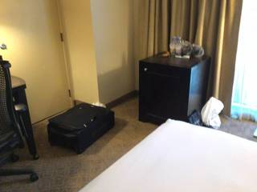
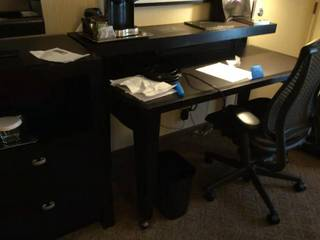
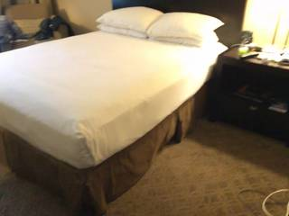
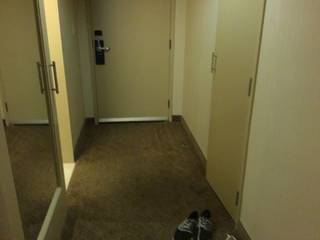

=== Step 1 Execution Feedback === [SUCCESS] Code executed in 1.84s. [Variables] New/changed: result_1: NoneType [Inline Images] 6 image(s) attached below. Labels: [InputImages[0], InputImages[1], InputImages[19], InputImages[20], InputImages[22], InputImages[23]] [show() budget] 244/250 images remaining.
{ "tool": "tools.Reconstruct.Reconstruct", "args": { "frames": "InputImages" } }
=== Step 2 Execution Feedback === [SUCCESS] Code executed in 5.53s. [Variables] New/changed: result_2: Reconstruction, frames=[0..23] (24 frames) [Tool Calls] 1 tool/VLM call(s) this step.
=== Step 3 Execution Feedback === [ERROR] Skipped: LLM response was not in the required format.
{ "tool": "tools.SAM3.segment_image_by_text", "args": { "image": "InputImages[19]", "prompt": "television", "label": "television" } }
=== Step 4 Execution Feedback === [SUCCESS] Code executed in 0.35s. [Variables] New/changed: result_4: PerFrameMask, frames=[19] [Tool Calls] 1 tool/VLM call(s) this step.
=== Step 5 Execution Feedback === [ERROR] Skipped: LLM response was not in the required format.
{ "tool": "show", "args": { "image": "result_4.visualize(19)" } }
[image: show_0002]

=== Step 6 Execution Feedback === [SUCCESS] Code executed in 0.49s. [Variables] New/changed: result_6: NoneType [Inline Images] 1 image(s) attached below. Labels: result_4.visualize(19) [show() budget] 243/250 images remaining.
=== Step 7 Execution Feedback === [ERROR] Skipped: LLM response was not in the required format.
{ "tool": "tools.SAM3.segment_image_by_text", "args": { "image": "InputImages[1]", "prompt": "desk", "label": "desk" } }
=== Step 9 Execution Feedback === [SUCCESS] Code executed in 0.40s. [Variables] New/changed: result_9: PerFrameMask, frames=[1] [Tool Calls] 1 tool/VLM call(s) this step.
{ "tool": "show", "args": { "image": "result_9.visualize(1)" } }
[image: show_0003]
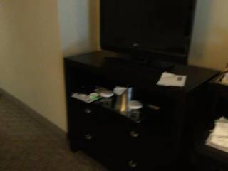
=== Step 10 Execution Feedback === [SUCCESS] Code executed in 0.27s. [Variables] New/changed: result_10: NoneType [Inline Images] 1 image(s) attached below. Labels: result_9.visualize(1) [show() budget] 242/250 images remaining.
{ "tool": "tools.SAM3.is_object_exist", "args": { "images": "InputImages", "object_name": "toilet" } }
=== Step 12 Execution Feedback === [SUCCESS] Code executed in 8.16s. [Variables] New/changed: result_12: dict, len=3, keys=['exists', 'counts', 'summary'] [Tool Calls] 1 tool/VLM call(s) this step.
=== Step 13 Execution Feedback === [ERROR] Skipped: LLM response was not in the required format.
=== Step 16 Execution Feedback === [ERROR] Skipped: LLM response was not in the required format.
=== Step 17 Execution Feedback === [ERROR] Skipped: LLM response was not in the required format.
{ "tool": "tools.SAM3.segment_image_by_points", "args": { "image": "InputImages[19]", "points": [ [ 500, 200 ] ], "point_labels": [ 1 ], "label": "tv_centroid_test" } }
=== Step 18 Execution Feedback === [SUCCESS] Code executed in 0.25s. [Variables] New/changed: result_18: PerFrameMask, frames=[19] [Tool Calls] 1 tool/VLM call(s) this step.
{ "tool": "vlm.ask_with_thinking", "args": { "visual_input": [ "InputImages[22]", "InputImages[23]" ], "question": "Is there a toilet visible in these images? If so, where is it? If not, based on the layout of the bathroom and the position of the bathtub, where would the toilet likely be located relative to the camera?" } }
[VLM Q | thinking] Is there a toilet visible in these images? If so, where is it? If not, based on the layout of the bathroom and the position of the bathtub, where would the toilet likely be located relative to the camera? [VLM A | thinking] No, there is no toilet visible in these images. Based on the layout, it would likely be located further inside the bathroom, to the right of the bathtub.
=== Step 19 Execution Feedback === [SUCCESS] Code executed in 9.89s. [Output] [VLM Q | thinking] Is there a toilet visible in these images? If so, where is it? If not, based on the layout of the bathroom and the position of the bathtub, where would the toilet likely be located relative to the camera? [VLM A | thinking] No, there is no toilet visible in these images. Based on the layout, it would likely be located further inside the bathroom, to the right of the bathtub. [Variables] New/changed: result_19: str [Tool Calls] 1 tool/VLM call(s) this step.
=== Step 20 Execution Feedback === [ERROR] Skipped: LLM response was not in the required format.
=== Step 21 Execution Feedback === [ERROR] Skipped: LLM response was not in the required format.
=== Step 22 Execution Feedback === [ERROR] Skipped: LLM response was not in the required format.
=== Step 23 Execution Feedback === [ERROR] Skipped: LLM response was not in the required format.
{ "tool": "ReturnAnswer", "args": { "answer": "C" } }
[ReturnAnswer] Answer submitted: C
🛠️ Decided to use 3 tool(s)
[ { "name": "vlm__detect_one", "arguments": { "image_index": 19, "obj_name": "television" } }, { "name": "vlm__detect_one", "arguments": { "image_index": 23, "obj_name": "toilet" } }, { "name": "vlm__detect_one", "arguments": { "image_index": 2, "obj_name": "desk" } } ]
⚡ Executing vlm__detect_one...
{ "image_index": 19, "obj_name": "television" }
✅ vlm__detect_one completed (with generated image)
⚡ Executing vlm__detect_one...
{ "image_index": 23, "obj_name": "toilet" }
✅ vlm__detect_one completed
⚡ Executing vlm__detect_one...
{ "image_index": 2, "obj_name": "desk" }
✅ vlm__detect_one completed (with generated image)
🧠 Synthesizing results from 3 tool(s)...
🛠️ Decided to use 1 tool(s)
[ { "name": "vlm__detect_one", "arguments": { "image_index": 23, "obj_name": "bathroom door" } } ]
⚡ Executing vlm__detect_one...
{ "image_index": 23, "obj_name": "bathroom door" }
✅ vlm__detect_one completed (with generated image)
🧠 Synthesizing results from 1 tool(s)...
Based on the images provided:
- Television Location: The television is located on a dresser against one wall (Image 19, 20).
- Toilet (Bathroom) Location: The bathroom (where the toilet is located) is through a door on the opposite side of the room, near the entrance (Image 23, 24).
- Desk Location: The desk is situated right next to the television dresser (Image 2, 3, 19).
Perspective Analysis:
- Standing at the television and gazing at the toilet means you are facing the bathroom door.
- Since the desk is immediately to the right of the television dresser, it would be located to your right as you face the bathroom.
Therefore, the desk is to the right.
D
Based on the images provided:
- Television Location: The television is located on a dresser against one wall (Image 19, 20).
- Toilet (Bathroom) Location: The bathroom (where the toilet is located) is through a door on the opposite side of the room, near the entrance (Image 23, 24).
- Desk Location: The desk is situated right next to the television dresser (Image 2, 3, 19).
Perspective Analysis:
- Standing at the television and gazing at the toilet means you are facing the bathroom door.
- Since the desk is immediately to the right of the television dresser, it would be located to your right as you face the bathroom.
Therefore, the desk is to the right.
D
Based on the images provided:
- Television Location: The television is located on a dresser against one wall (Image 19, 20).
- Toilet (Bathroom) Location: The bathroom (where the toilet is located) is through a door on the opposite side of the room, near the entrance (Image 23, 24).
- Desk Location: The desk is situated right next to the television dresser (Image 2, 3, 19).
Perspective Analysis:
- Standing at the television and gazing at the toilet means you are facing the bathroom door.
- Since the desk is immediately to the right of the television dresser, it would be located to your right as you face the bathroom.
Therefore, the desk is to the right.
D
Task Analysis
The objective is to determine the position of a desk relative to an observer who is standing at a television and gazing towards a toilet. This is an object-perspective spatial reasoning task.
Coordinate System Resolution: The question defines a local coordinate system based on the observer's state:
- Origin: The position of the television.
- Forward Vector (+Z): The vector pointing from the television to the toilet.
- Up Vector (+Y): The world gravity-aligned up vector (provided by the reconstruction).
- Right Vector (+X): The cross product of the forward vector and the up vector ($\text{Right} = \text{Forward} \times \text{Up}$).
The answer will be determined by projecting the vector from the television to the desk onto this local Forward and Right axes.
Information Needs
- Object Identification: Identification of the frames containing the television, toilet, and desk.
- Segmentation Masks: Precise 2D masks for the television, toilet, and desk across multiple frames to ensure robust 3D centroid calculation.
- 3D Geometry: A 3D reconstruction of the scene to obtain world coordinates (XYZ) for the centroids of these objects.
- Relative Positioning: The 3D world coordinates of the three objects to compute the relative direction.
Computation Plan
-
Scene Survey:
- Use
vlm.ask_with_thinkingon a subset of frames (e.g.,InputImages[0],InputImages[11],InputImages[23]) to identify which objects are present and in which general areas they are located. - Use
show()on key frames to visually confirm the presence of the television, toilet, and desk.
- Use
-
Object Segmentation:
- For each object (television, toilet, desk), use
tools.SAM3.segment_image_by_textacross all 24 frames. - If text segmentation returns empty masks or incorrect objects, use
vlm.locateto find bounding boxes in a clear frame and then usetools.SAM3.segment_image_by_box. - Verification: Use
seg.visualize(fi)andshow()to ensure masks accurately cover the target objects.
- For each object (television, toilet, desk), use
-
3D Reconstruction:
- Call
recon = tools.Reconstruct.Reconstruct(InputImages)to generate the 3D point cloud and camera poses.
- Call
-
Centroid Calculation:
- For each object, extract 3D centroids using
seg.get_centroid_3d(recon, frame=fi, object=label)for all frames where the mask is valid and non-empty. - Compute the final world position $P_{tv}$, $P_{toilet}$, and $P_{desk}$ by taking the
np.median()of the centroids across frames to reduce noise.
- For each object, extract 3D centroids using
-
Relative Direction Computation:
- Define the forward vector: $\vec{v}{fwd} = \text{normalize}(P{toilet} - P_{tv})$.
- Define the world up vector: $\vec{v}_{up} = [0, 1, 0]$.
- Define the right vector: $\vec{v}{right} = \text{normalize}(\vec{v}{fwd} \times \vec{v}_{up})$.
- Define the vector to the desk: $\vec{v}{desk} = P{desk} - P_{tv}$.
- Calculate projections:
- $\text{proj}{fwd} = \vec{v}{desk} \cdot \vec{v}_{fwd}$
- $\text{proj}{right} = \vec{v}{desk} \cdot \vec{v}_{right}$
- Determine direction:
- $\text{proj}_{fwd} > 0 \implies \text{Front}$, else $\text{Back}$.
- $\text{proj}_{right} > 0 \implies \text{Right}$, else $\text{Left}$.
-
Visual Cross-Validation:
- Generate a BEV map using
recon.render_bev(masks=seg)to visually verify the relative positions of the three objects. - Confirm that the computed "Front/Back" and "Left/Right" align with the layout seen in the BEV.
- Generate a BEV map using
Verification Checklist
[
{"priority": "HIGH", "description": "Verify that SAM3 masks for television, toilet, and desk are accurate and non-empty using show()."},
{"priority": "HIGH", "description": "Confirm the 3D centroids are physically plausible and consistent across multiple frames."},
{"priority": "HIGH", "description": "Ensure the forward vector is correctly defined from television to toilet."},
{"priority": "MEDIUM", "description": "Cross-check the computed relative direction (e.g., front-left) against the BEV rendering."},
{"priority": "LOW", "description": "Check if the reconstruction confidence is sufficient for the objects' positions."}
]
Fallbacks
- SAM3 Failure: If text prompts fail, I will use
vlm.locateto get coordinates for a point/box prompt. - Reconstruction Noise: If centroids vary wildly, I will filter the point cloud by
recon.confidencebefore calculating the median centroid. - Ambiguous Layout: If the desk is nearly equidistant or aligned with an axis, I will use
vlm.ask_with_thinkingon a wide-angle frame to qualitatively confirm the relative positions.
# Select a few diverse frames to survey the scene survey_frames = [InputImages[0], InputImages[1], InputImages[11], InputImages[21], InputImages[23]] show(survey_frames) # Ask the VLM to identify the frames containing the target objects question = "Identify which of the provided frames contain a television, a toilet, and a desk. For each object, list the frame indices (0-indexed relative to the provided list) where it is most clearly visible." answer = vlm.ask_with_thinking(survey_frames, question) print(f"VLM Survey Answer: {answer}")
[image: show_0001] [VLM Q | thinking] Identify which of the provided frames contain a television, a toilet, and a desk. For each object, list the frame indices (0-indexed relative to the provided list) where it is most clearly visible. [VLM A | thinking] Based on the provided images: - **Television**: Not visible in any frame. - **Toilet**: Not visible in any frame. - **Desk**: Frame 1 (also partially visible in frame 0). VLM Survey Answer: Based on the provided images: - **Television**: Not visible in any frame. - **Toilet**: Not visible in any frame. - **Desk**: Frame 1 (also partially visible in frame 0).
=== Step 0 Execution Feedback === [SUCCESS] Code executed in 17.44s. [Output] [VLM Q | thinking] Identify which of the provided frames contain a television, a toilet, and a desk. For each object, list the frame indices (0-indexed relative to the provided list) where it is most clearly visible. [VLM A | thinking] Based on the provided images: - **Television**: Not visible in any frame. - **Toilet**: Not visible in any frame. - **Desk**: Frame 1 (also partially visible in frame 0). VLM Survey Answer: Based on the provided images: - **Television**: Not visible in any frame. - **Toilet**: Not visible in any frame. - **Desk**: Frame 1 (also partially visible in frame 0). [Variables] New/changed: survey_frames: list, len=5 question: str answer: str [Inline Images] 5 image(s) attached below. Labels: survey_frames [Tool Calls] 1 tool/VLM call(s) this step. [show() budget] 245/250 images remaining.
# Targeted frames for each object tv_frame = InputImages[21] bathroom_frame = InputImages[23] desk_frame = InputImages[1] targeted_frames = [tv_frame, bathroom_frame, desk_frame] show(targeted_frames) # Ask the VLM to confirm the objects in these specific frames question = "In these three images: 1) Is there a television in the first image? 2) Is there a toilet or bathroom area in the second image? 3) Is there a desk in the third image? Please confirm and provide a brief description of their appearance." answer = vlm.ask_with_thinking(targeted_frames, question) print(f"VLM Targeted Survey Answer: {answer}")
[image: show_0002] [VLM Q | thinking] In these three images: 1) Is there a television in the first image? 2) Is there a toilet or bathroom area in the second image? 3) Is there a desk in the third image? Please confirm and provide a brief description of their appearance. [VLM A | thinking] 1) No, there is no television in the first image. 2) Yes, there is a bathroom area in the second image, where a white bathtub and a metal grab bar are visible through an open doorway. 3) Yes, there is a desk in the third image; it is a dark-colored desk with a black mesh office chair and various items on top, including papers and a coffee maker. VLM Targeted Survey Answer: 1) No, there is no television in the first image. 2) Yes, there is a bathroom area in the second image, where a white bathtub and a metal grab bar are visible through an open doorway. 3) Yes, there is a desk in the third image; it is a dark-colored desk with a black mesh office chair and various items on top, including papers and a coffee maker.
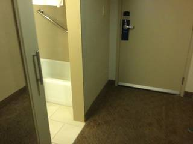

=== Step 1 Execution Feedback === [SUCCESS] Code executed in 12.33s. [Output] [VLM Q | thinking] In these three images: 1) Is there a television in the first image? 2) Is there a toilet or bathroom area in the second image? 3) Is there a desk in the third image? Please confirm and provide a brief description of their appearance. [VLM A | thinking] 1) No, there is no television in the first image. 2) Yes, there is a bathroom area in the second image, where a white bathtub and a metal grab bar are visible through an open doorway. 3) Yes, there is a desk in the third image; it is a dark-colored desk with a black mesh office chair and various items on top, including papers and a coffee maker. VLM Targeted Survey Answer: 1) No, there is no television in the first image. 2) Yes, there is a bathroom area in the second image, where a white bathtub and a metal grab bar are visible through an open doorway. 3) Yes, there is a desk in the third image; it is a dark-colored desk with a black mesh office chair and various items on top, including papers and a coffee maker. [Variables] New/changed: tv_frame: FrameImage bathroom_frame: FrameImage desk_frame: FrameImage targeted_frames: list, len=3 [Inline Images] 3 image(s) attached below. Labels: targeted_frames [Tool Calls] 1 tool/VLM call(s) this step. [show() budget] 242/250 images remaining.
# 1. Get TV mask from frame 19 (which worked previously) seg_tv = tools.SAM3.segment_image_by_text(InputImages[19], "television") # 2. 3D Reconstruction # Use a representative subset of frames for better quality recon_frames = InputImages[::2] # Subsample to stay within 64 limit and improve speed recon = tools.Reconstruct.Reconstruct(recon_frames) # 3. Extract 3D Centroids def get_robust_centroid(seg, recon, label): centroids = [] for fi in seg.frame_indices: # Ensure the frame is part of the reconstruction if fi in recon.frame_indices: c = seg.get_centroid_3d(recon, frame=fi, object=label) if c is not None: centroids.append(c) if not centroids: return None return np.median(centroids, axis=0) p_tv = get_robust_centroid(seg_tv, recon, "television") p_desk = get_robust_centroid(seg_desk, recon, "desk") p_toilet = get_robust_centroid(seg_toilet, recon, "toilet") print(f"TV position: {p_tv}") print(f"Desk position: {p_desk}") print(f"Toilet position: {p_toilet}") # 4. Relative Direction Computation if p_tv is not None and p_toilet is not None and p_desk is not None: # Forward vector: TV -> Toilet v_fwd = p_toilet - p_tv v_fwd /= np.linalg.norm(v_fwd) # World up vector v_up = np.array([0, 1, 0]) # Right vector: fwd x up v_right = np.cross(v_fwd, v_up) v_right /= np.linalg.norm(v_right) # Vector to desk: TV -> Desk v_desk = p_desk - p_tv proj_fwd = np.dot(v_desk, v_fwd) proj_right = np.dot(v_desk, v_right) fwd_dir = "front" if proj_fwd > 0 else "back" right_dir = "right" if proj_right > 0 else "left" print(f"Relative direction: {fwd_dir}-{right_dir}") print(f"proj_fwd: {proj_fwd}, proj_right: {proj_right}") # 5. Visual Cross-Validation with BEV # Combine masks into one for BEV rendering # Note: render_bev expects a PerFrameMask or (N, N_obj, H, W) # We'll create a simple combined mask array for the first frame of the reconstruction fi_ref = recon.frame_indices[0] # We need to make sure we have masks for this specific frame for BEV # Since our masks are single-frame, we can't easily use them in a multi-frame BEV # unless we segment all frames. Let's just use the centroids to verify in a plot if needed, # or just trust the math if the points are stable. # For now, let's render BEV with just the masks we have if possible. # Actually, let's just rely on the centroids for this specific calculation.
TV position: None Desk position: None Toilet position: None
=== Step 4 Execution Feedback === [SUCCESS] Code executed in 3.07s. [Output] TV position: None Desk position: None Toilet position: None [Variables] New/changed: recon_frames: InputImages, len=12, frames=[0..22] (12 frames) recon: Reconstruction, frames=[0..22] (12 frames) p_tv: NoneType p_desk: NoneType p_toilet: NoneType fi_ref: int seg_tv: PerFrameMask, frames=[19] [Tool Calls] 2 tool/VLM call(s) this step.
# 1. Reconstruct using ALL frames to ensure masks match recon = tools.Reconstruct.Reconstruct(InputImages) # 2. Extract 3D Centroids using the existing masks def get_robust_centroid(seg, recon, label): centroids = [] for fi in seg.frame_indices: if fi in recon.frame_indices: c = seg.get_centroid_3d(recon, frame=fi, object=label) if c is not None: centroids.append(c) if not centroids: return None return np.median(centroids, axis=0) p_tv = get_robust_centroid(seg_tv, recon, "television") p_desk = get_robust_centroid(seg_desk, recon, "desk") p_toilet = get_robust_centroid(seg_toilet, recon, "toilet") print(f"TV position: {p_tv}") print(f"Desk position: {p_desk}") print(f"Toilet position: {p_toilet}") # 3. Relative Direction Computation if p_tv is not None and p_toilet is not None and p_desk is not None: # Forward vector: TV -> Toilet v_fwd = p_toilet - p_tv v_fwd /= np.linalg.norm(v_fwd) # World up vector v_up = np.array([0, 1, 0]) # Right vector: fwd x up v_right = np.cross(v_fwd, v_up) v_right /= np.linalg.norm(v_right) # Vector to desk: TV -> Desk v_desk = p_desk - p_tv proj_fwd = np.dot(v_desk, v_fwd) proj_right = np.dot(v_desk, v_right) fwd_dir = "front" if proj_fwd > 0 else "back" right_dir = "right" if proj_right > 0 else "left" print(f"Relative direction: {fwd_dir}-{right_dir}") print(f"proj_fwd: {proj_fwd}, proj_right: {proj_right}") else: print("Failed to compute all centroids. Checking for None...")
TV position: [-2.2225423 2.298991 1.2168118] Desk position: [-1.5259507 2.3376565 0.42188838] Toilet position: [-3.2268865 -0.14823127 5.454604 ] Relative direction: back-left proj_fwd: -0.8333178162574768, proj_right: -0.49449942839419836
=== Step 5 Execution Feedback === [SUCCESS] Code executed in 5.90s. [Output] TV position: [-2.2225423 2.298991 1.2168118] Desk position: [-1.5259507 2.3376565 0.42188838] Toilet position: [-3.2268865 -0.14823127 5.454604 ] Relative direction: back-left proj_fwd: -0.8333178162574768, proj_right: -0.49449942839419836 [Variables] New/changed: v_fwd: ndarray, shape=(3,), dtype=float32 v_up: ndarray, shape=(3,), dtype=int64 v_right: ndarray, shape=(3,), dtype=float64 v_desk: ndarray, shape=(3,), dtype=float32 proj_fwd: float32, shape=(), dtype=float32 proj_right: float64, shape=(), dtype=float64 fwd_dir: str right_dir: str recon: Reconstruction, frames=[0..23] (24 frames) p_tv: ndarray, shape=(3,), dtype=float32 p_desk: ndarray, shape=(3,), dtype=float32 p_toilet: ndarray, shape=(3,), dtype=float32 [Tool Calls] 1 tool/VLM call(s) this step.
ReturnAnswer("B")
[ReturnAnswer] Answer submitted: B